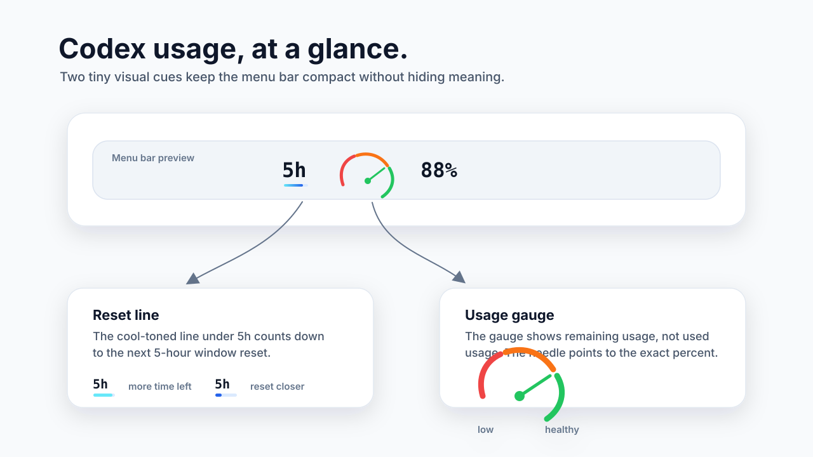

macOS menu bar for Codex users
CodexGlance
Codex usage, at a glance.
A tiny app for people who only want to know how much Codex usage is left, without opening another panel.
Visual language
Two small signals, one clear answer.
The default view stays compact. The gauge shows remaining usage. The line under the window label shows how close the next reset is.

Default view
Current window first. Weekly only when needed.
CodexGlance opens with the 5-hour window only. Weekly usage can be added from the menu when it matters.
The number is remaining percentage, matching Codex's Usage remaining panel.
Keep it hidden by default, then turn it on from the menu when you want the broader limit.
Install
For non-technical users.
No terminal required. Download the app, unzip it, and open it from Applications.
-
Download
Get
CodexGlance.app.zipfrom GitHub Releases. -
Move
Unzip it and drag
CodexGlance.appinto Applications. - Open once Right-click the app, choose Open, then confirm Open.
- Glance Codex usage appears in the macOS menu bar.
Privacy
Local by design.
CodexGlance reads usage from the local Codex app server. It does not ship tokens, cookies, prompts, or usage data to a third-party service.